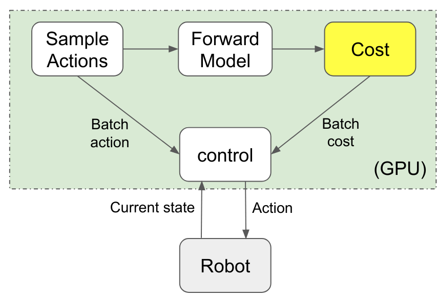

STORM
Stochastic Tensor Optimization for Robot Motion - A GPU Robot Motion Toolkit
This package contains code for reactive robot motion leveraging parallel compute on the GPU.

The proposed control framework leverages MPPI (“control” block in below image) to optimize over sampled actions and their costs. The costs are computed by rolling out the forward model from the current state with the sampled actions.
{kind=link}
Install Instructions
System Dependencies:
Conda version >= 4.9
NVIDIA driver >= 460.32
Cuda toolkit >= 11.0
Steps:
Create a new conda environment with: conda env create -f environment.yml
Install python bindings for isaacgym: https://developer.nvidia.com/isaac-gym
run the following command from this directory: pip install -e .
Running Example
run scripts/train_self_collision.py to get weights for robot self collision checking.
Run python franka_reacher.py, which will launch isaac gym with a franka robot trying to reach a red mug. In the isaac gym gui, search for “ee_target” and toggle “Edit DOF”, now you can move the target pose by using the sliders.
storm_kit package
Subpackages
- storm_kit.differentiable_robot_model package
- Submodules
- storm_kit.differentiable_robot_model.coordinate_transform module
- storm_kit.differentiable_robot_model.differentiable_rigid_body module
- storm_kit.differentiable_robot_model.differentiable_robot_model module
- storm_kit.differentiable_robot_model.urdf_utils module
- storm_kit.differentiable_robot_model.utils module
- Submodules
- storm_kit.geom package
- storm_kit.gym package
- storm_kit.mpc package